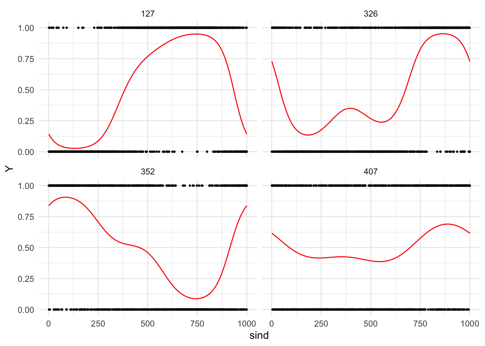
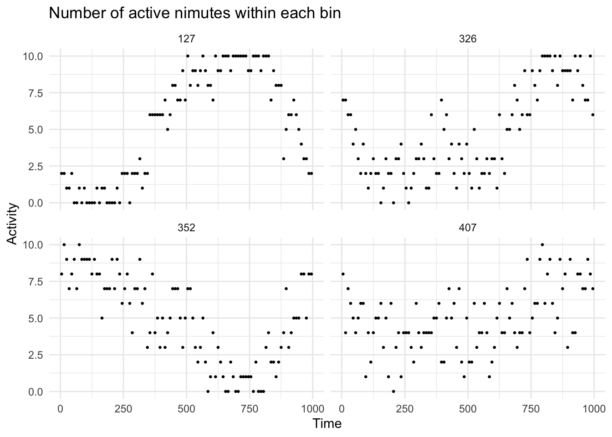
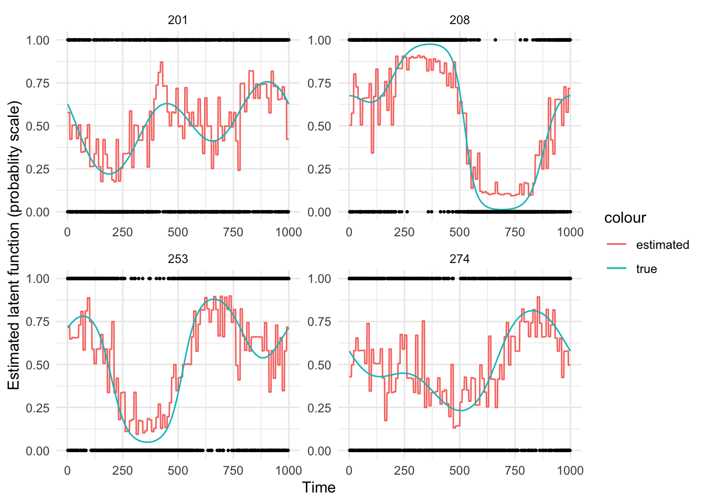
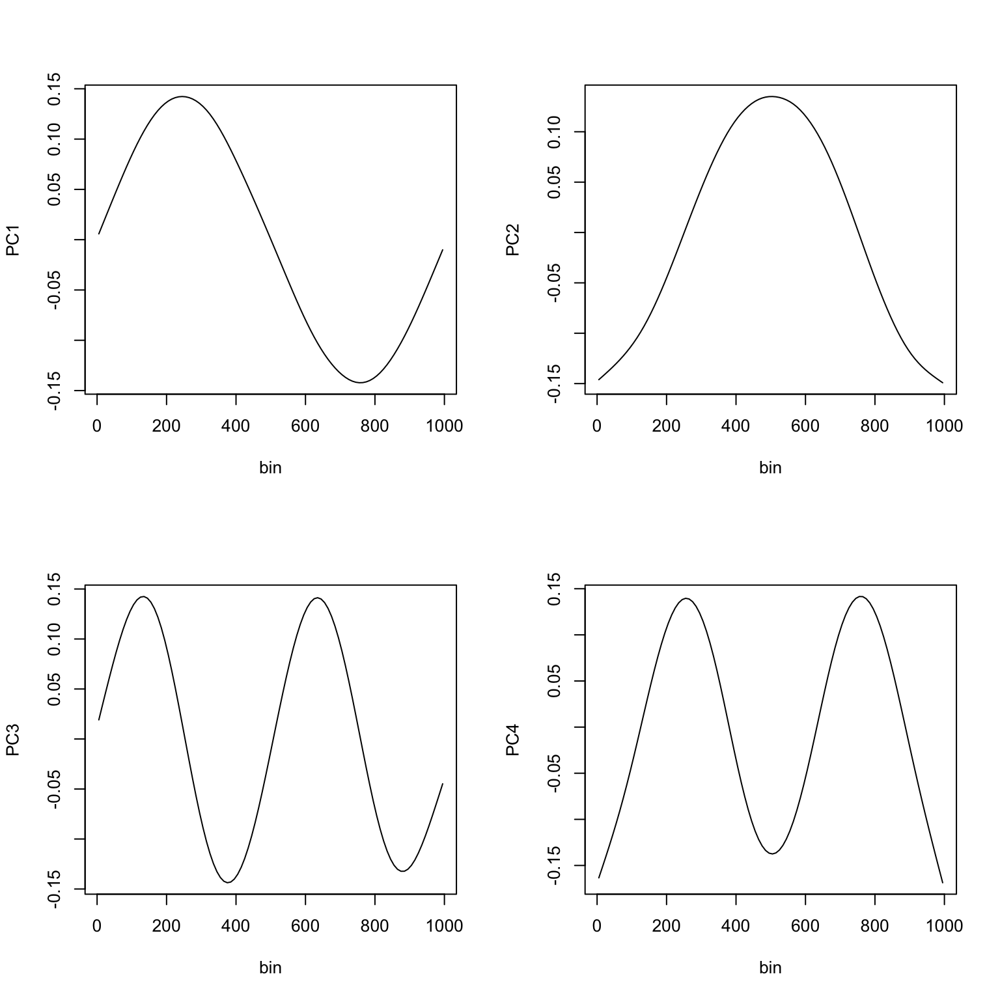
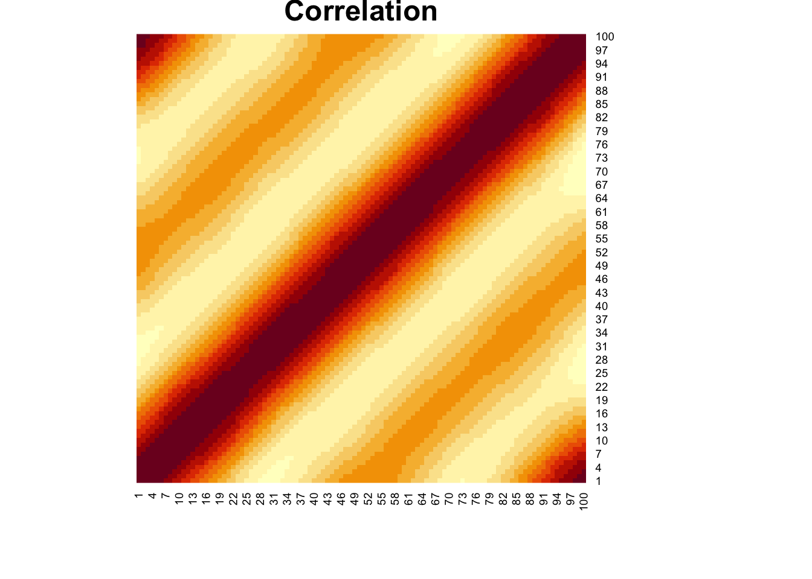
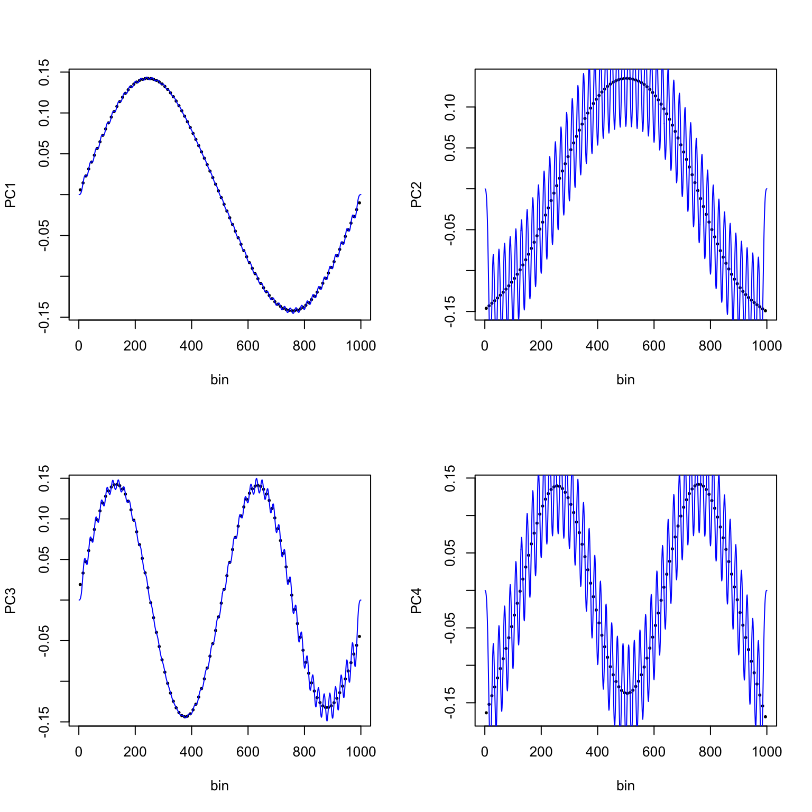
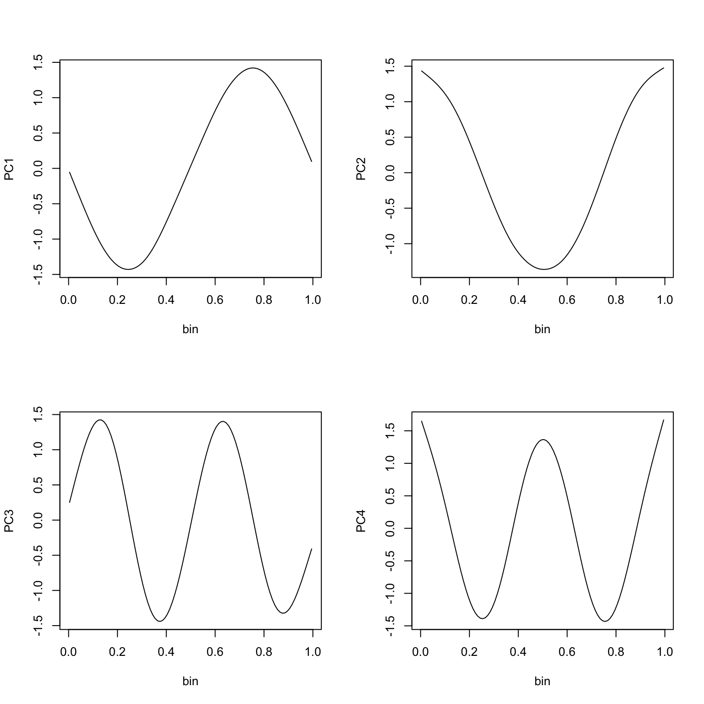
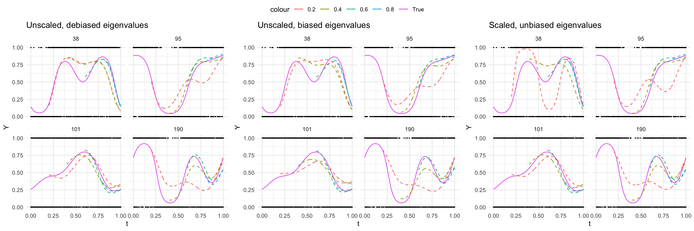

Progress Report on One Simulated Dataset
Ying Jin
2023-09-15
I am now on the way to add the debias step to the whole algorithm. Just so that I have a set of “true parameters” for comparison, I am gonna use the simulation dataset for this part.
1 Generation mechanism
- I am gonna generate only one dataset as an example
- 500 individuals each with 1000 measures
\[\begin{aligned} Y_i(t) & \sim Bernoulli(\frac{exp(\eta_i(t))}{1+exp(\eta_i(t))}) \\ \eta_i(t) &= f_0(t)+ \xi_{i1}\sqrt{2}sin(2\pi t)+\xi_{i2}\sqrt{2}cos(2\pi t)+\xi_{i3}\sqrt{2}sin(4\pi t)+\xi_{i4}\sqrt{2}cos(4\pi t) \end{aligned}\]
where:
- \(t\) is equal-spaced on \([0, 1]\)
- \(f_0(t)=0\)
- \(\xi_k \sim N(0, \lambda_k)\), and \(\lambda_k = 1, 0.5, 0.25, 0.125\) for k = 1, 2, 3, 4 respectively.
- In fact, since there is a constant factor \(\sqrt{2}\) before each eigenfunction so that they are orthogonal
N <- 500 # sample size
J <- 1000 # number of observation points
t = seq(0,1,len=J) # observations points
# mean function
f_0 <- function(s) 0
#eigenfunctions
K <- 4 # number of eigenfunctions
phi <- sqrt(2)*cbind(sin(2*pi*t),cos(2*pi*t),
sin(4*pi*t),cos(4*pi*t))
# eigenvalues
lambda = 0.5^(0:(K-1)) # generated training data
## score
xi <- matrix(rnorm(N*K),N,K)
xi <- xi %*% diag(sqrt(lambda))
# subject-specific random effect
b_i <- xi %*% t(phi); # of size N by J
# latent gaussian function
eta_i <- t(vapply(1:N, function(x){
f_0(t) + b_i[x,]
}, numeric(J)))
# outcome binary function
Y_i <- matrix(rbinom(N*J, size=1, prob=plogis(eta_i)),
N, J, byrow=FALSE)
# format into dataframe
# id = subject identifier (factor variable)
# sind = numeric value corresponding to the observed functional domain
# Y = functional response (binary)
# sind_inx = numeric value associated with order of "sind"
# this is not necessary, but may be of convenience when you implement the method
train_df <- data.frame(id = factor(rep(1:N, each=J)),
t = rep(t, N),
Y = as.vector(t(Y_i)),
eta_i = as.vector(t(eta_i)),
sind = rep(1:J, N))
# visualization
rand_id <- sample(N, size = 4)
train_df %>% filter(id %in% rand_id) %>%
ggplot()+
geom_point(aes(x=sind, y=Y), size = 0.5)+
geom_line(aes(x=sind, y=plogis(eta_i)), col = "red")+
#geom_line(aes(x=sind_inx, y=eta_i), col = "blue")+
facet_wrap(~id)
2 fGFPCA model fitting
- Training sample: N=500
2.1 Bin data
- Bin every 10 consecutive observations
# bin data
bin_w <- 10 # bin width
n_bin <- J/bin_w # number of bins
brks <- seq(0, J, by = bin_w) # cutoff points
mid <- (brks+bin_w/2)[1:n_bin] # mid points
train_df$bin <- cut(train_df$sind, breaks = brks, include.lowest = T, labels = mid)
train_df$bin <- as.numeric(as.character(train_df$bin))
# unique(df$bin)
train_df %>%
filter(id %in% rand_id) %>%
group_by(id, bin) %>%
summarise(num = sum(Y)) %>%
ggplot()+
geom_point(aes(x=bin, y=num), size = 0.5)+
facet_wrap(~id)+
labs(x="Time", y = "Activity", title = "Number of active nimutes within each bin")
2.2 Local GLMM
- Used glmer with PIRLS (nAGQ=0) for local GLMMs step
- Fit on the training set (N=500)
- Use original time index ([0, 1]) as independent variable
# fit model on the training set
train_bin_lst <- split(train_df, f = train_df$bin)
# length(train_bin_lst)
# lapply(train_bin_lst, dim)
# local GLMM and estimate latent function
# use PIRLS (nAGQ=0) to avoid near-unidentifiability issues
t1=Sys.time()
df_est_latent <- lapply(train_bin_lst, function(x){pred_latent(x, n_node = 0)})
t2= Sys.time()
t_local_glmm <- t2-t1 # less than 5 secondsdf_est_latent <- bind_rows(df_est_latent)
# head(df_est_latent)
# example estimated latent function
train_id <- unique(train_df$id)
rand_id <- sample(train_id, 4)
df_est_latent %>%
filter(id %in% rand_id) %>%
mutate(eta_hat = exp(eta_hat)/(1+exp(eta_hat))) %>%
mutate(eta_i = exp(eta_i)/(1+exp(eta_i))) %>%
ggplot()+
geom_line(aes(x=t, y=eta_hat, group = id, col = "estimated"))+
geom_line(aes(x=t, y=eta_i, group = id, col = "true"))+
geom_point(aes(x=t, y = Y, group = id), size = 0.5)+
facet_wrap(~id, scales = "free")+
labs(x = "Time", y = "Estimated latent function (probablity scale)")
2.3 FPCA
uni_eta_hat <- df_est_latent %>% filter(bin==sind)
mid_t <- df_est_latent$t[df_est_latent$bin==df_est_latent$sind]
mid_t <- unique(mid_t) # the time points correspoinding to bin midpoints
mat_est_unique <- matrix(uni_eta_hat$eta_hat,
nrow=length(train_id),
ncol=n_bin, byrow = F)
# row index subject, column binned time
# dim(mat_est_unique)
t1 <- Sys.time()
fpca_mod <- fpca.face(mat_est_unique, argvals = mid_t, var=T)
t2 <- Sys.time()
t_fpca <- t2-t1 # less than one second- Estimated mean
plot(mid_t, fpca_mod$mu, type = "l", xlab = "bin", ylab = "Mean")
- Estimated eigenfunctions
par(mfrow=c(2,2))
plot(mid_t, fpca_mod$efunctions[, 1], type="l", xlab="bin", ylab="PC1")
plot(mid_t, fpca_mod$efunctions[, 2], type="l", xlab="bin", ylab="PC2")
plot(mid_t, fpca_mod$efunctions[, 3], type="l", xlab="bin", ylab="PC3")
plot(mid_t, fpca_mod$efunctions[, 4], type="l", xlab="bin", ylab="PC4")
- Correlation matrix
# plot correlation matrix
heatmap(cov2cor(fpca_mod$VarMats[[1]]), Rowv = NA, Colv = NA, main = "Correlation")
- Estimated eigenvalues
# estimated eigenvalues from FPCA (biased)
fpca_mod$evalues[1:4]## [1] 50.086753 23.167732 11.406167 6.0594152.4 Debias (step 4)
According to the fGFPCA paper, in this step we do two things:
- Project the eigenfunctions with B-spline basis back to the original grid
- Debias the eigenvalues with GLMM (mgcv::bam, mgcm::gamm or gamm4:gamm) to be used for Laplace approximation
2.4.1 Porjection with B-spline basis
- Use fastGFPCA::reeval_efunctions. Cannot install the package so used the source code directly
- I would like to adjust use time points on the [0, 1] scale as evaluation points
- Also, take number of knots and order from the FPCA model in step 3 (knots = 35, p = 3)
# order of b splines
p <- 3
# knots
knots <- 35
knots_values <- seq(-p, knots + p, length = knots + 1 + 2 *p)/knots
knots_values <- knots_values * (max(mid_t) - min(mid_t)) + min(mid_t)
# evaluate B-splines on binned grid
B <- spline.des(knots = knots_values, x = mid_t, ord = p + 1,
outer.ok = TRUE)$design
# evaluate B-splines on original grid
Bnew <- spline.des(knots = knots_values, x = unique(train_df$t), ord = p + 1,
outer.ok = TRUE)$design
# project binned eigenfunctions onto the original grid
efunctions_new <- matrix(NA, J, K)
for(k in 1:K){
lm_mod <- lm(fpca_mod$efunctions[,k] ~ B-1)
efunctions_new[,k] <- Bnew %*% coef(lm_mod)
}
# project mean functions
lm_mod <- lm(fpca_mod$mu ~ B-1)
mu_new <- Bnew %*% coef(lm_mod)# visualization
par(mfrow=c(2,2))
plot(mid_t, fpca_mod$efunctions[, 1], xlab="bin", ylab="PC1", pch=20, cex = 0.5)
lines(t, efunctions_new[, 1], col="blue")
plot(mid_t, fpca_mod$efunctions[, 2], xlab="bin", ylab="PC2", pch=20, cex = 0.5)
lines(t, efunctions_new[, 2], col="blue")
plot(mid_t, fpca_mod$efunctions[, 3], xlab="bin", ylab="PC3", pch=20, cex = 0.5)
lines(t, efunctions_new[, 3], col="blue")
plot(mid_t, fpca_mod$efunctions[, 4], xlab="bin", ylab="PC4", pch=20, cex = 0.5)
lines(t, efunctions_new[, 4], col="blue")
- The projection seems to work very well!
2.4.2 Debias with eigenvalues
- The bias was caused by the misspecification of latent process (assume constant effect over smooth function).
- What needs re-evaluation are eigenvalues (variance estimates). They will be used in Laplace Approximation for out-of-sample prediction.
- We do not need to debias individual scores because the scores for training sample will not be used for out-of-sample prediction. And out-of-sample scores are not estimated by FPCA but Laplace approximation.
- I will use the projected eigenfunctions from above.
- I am using mgcv::bam and setting method = “fREML” and discrete = TRUE to speed up computation
# dim(fpca_mod$efunctions)
df_phi <- data.frame(t = t, efunctions_new)
colnames(df_phi) <- c("t", paste0("phi", 1:4))
# train_df$bin <- as.numeric(as.character(train_df$bin))
train_df <- train_df %>% left_join(df_phi, by = "t")
train_df$id <- as.factor(train_df$id)# usethis::edit_r_environ()
t1 <- Sys.time()
debias_glmm <- bam(Y ~ s(t, bs="cr", k=10)+
s(id, by=phi1, bs="re")+
s(id, by=phi2, bs="re")+
s(id, by=phi3, bs="re")+
s(id, by=phi4, bs="re"),
family = binomial, data=train_df,
method = "fREML",
discrete = TRUE)
t2 <- Sys.time()
t_debias <- t2-t1 # less than 45 secondsAnd now I try to extract the variance of scores (debiased eigenvalues), using the conclusion that connects smoothing parameters to variance
\[\hat{p}_k=1/\hat{\lambda}_k^2\]
# transformed smoothing parameters
new_lambda <- 1/debias_glmm$sp[2:5]
new_lambda## s(id):phi1 s(id):phi2 s(id):phi3 s(id):phi4
## 95.40025 47.94811 25.76315 13.18696# new_lambda/lambda
# new_lambda/fpca_mod$evalues[1:4]This eigenvalues, as well as the eigenfunctions, are actually not on the same scale of true values. By looking into the fpca.face source code, eigenfunctions are scaled by the square root of the number of total observations points. Since our model was fitted on the binnd grid, the actual eigenvaleus and eigenfunctions would be:
[ \[\begin{aligned} \phi_k(t) & = \sqrt{n_{bin}}\hat{\phi}_k(t) \\ \lambda_k & = \hat{\lambda}_k/n_{bin} \end{aligned}\]]
Let’s rescale these quatities as below
- Re-scaled eigenvalues
new_lambda/n_bin## s(id):phi1 s(id):phi2 s(id):phi3 s(id):phi4
## 0.9540025 0.4794811 0.2576315 0.1318696- Re-scaled eigenfunctions
par(mfrow=c(2,2))
plot(mid_t, sqrt(n_bin)*fpca_mod$efunctions[, 1], type="l", xlab="bin", ylab="PC1")
plot(mid_t, sqrt(n_bin)*fpca_mod$efunctions[, 2], type="l", xlab="bin", ylab="PC2")
plot(mid_t, sqrt(n_bin)*fpca_mod$efunctions[, 3], type="l", xlab="bin", ylab="PC3")
plot(mid_t, sqrt(n_bin)*fpca_mod$efunctions[, 4], type="l", xlab="bin", ylab="PC4") - Both much closer to their true values
3 Out-of-sample prediction with Laplace approximation
I will now estimate individual score of test sample using Laplace Approximation, and calculated the predicted track.
- Generate additional 200 subjects for out-of-sample performance evaluation
- Maximum observations time: 0.2, 0.4, 0.6, 0.8
- Prediction window: 0.2-0.4, 0.4-0.6, 0.6-0.8, 0.8-1.0
3.1 Generate test data
# generated testing data
N_test <- 200
b_test <- matrix(rnorm(N_test*K), N_test, K) %*% diag(sqrt(lambda)) %*% t(phi) # of size N by J
# dim(b_test)
# latent gaussian function
eta_test <- t(vapply(1:N_test, function(x){
f_0(x) + b_i[x,]
}, numeric(J)))
# outcome binary function
Y_test <- matrix(rbinom(N_test*J, size=1, prob=plogis(eta_test)),
N_test, J, byrow=FALSE)
# format into dataframe
test_df <- data.frame(id = factor(rep(1:N_test, each=J)),
t = rep(t, N_test),
Y = as.vector(t(Y_test)),
eta_i = as.vector(t(eta_test)),
sind = rep(1:J, N_test))
# bin
test_df$bin <- cut(test_df$sind, breaks = brks, include.lowest = T, labels = mid)
test_df$bin <- as.numeric(as.character(test_df$bin))
test_df$id <- as.factor(test_df$id)
test_id <- unique(test_df$id)3.2 Laplace approximation
# the model
## now, with expanded mean and eigenfuncitons, a Bernoulli distribution at each time point
Model <- function(parm, Data){
xi <- parm[Data$pos.xi]
# log-prior
xi.prior <- dmvnorm(xi, mean = rep(0, Data$K), sigma=Data$tao, log = TRUE)
# log-posterior likelihood
eta <- Data$f0+Data$X %*% xi
p <- exp(eta)/(1+exp(eta))
LL <- sum(dbern(x=Data$y, prob=p, log = TRUE)) # log likelihood of Y|xi
LP <- LL+sum(xi.prior) # joint log likelihood of (Y, xi)
# output
Modelout <- list(LP=LP, Dev=-2*LL, Monitor=LL,
yhat=Data$y, parm=parm)
return(Modelout)
}# parameter names
name_lst <- as.list(rep(0, K))
names(name_lst) <- paste("xi", 1:K, sep = "")
parm.names <- as.parm.names(name_lst)
pos.xi <- grep("xi", parm.names)
PGF <- function(Data) {
xi <- rnorm(Data$K)
return(xi)
}
mon.names <- "LP"# approximation process
# container
pred_list <- list()
# score <- array(NA, dim=c(length(test_id), K, 4))
# dimensions: subject, eigenfunction, maximum observation time
# prediction for a single subject
t1 <- Sys.time()
# per subject
for(i in seq_along(test_id)){
df_i <- test_df %>% filter(id==test_id[i])
# per max obs time
for(tmax in c(0.2, 0.4, 0.6, 0.8)){
df_it <- df_i %>% filter(t <= tmax)
max_rid <- nrow(df_it)
# into a list
MyData <- list(K=K, PGF=PGF,
X=efunctions_new[1: max_rid, ],
mon.names=mon.names,
parm.names=parm.names,
pos.xi=pos.xi,
y=df_it$Y,
tao=diag(new_lambda), f0=mu_new[1:max_rid, ])
# fit laplace approximation
Fit <- LaplaceApproximation(Model, parm = rep(0, K), Data=MyData, Method = "BFGS")
# Fit <- LaplacesDemon(Model, Data=MyData, Initial.Values = parm = rep(0, K), Method = "BFGS")
score <- Fit$Summary1[, "Mode"]
# prediction
eta_pred_out <- mu_new+efunctions_new%*%score
df_i[ , paste0("pred", tmax)] <- eta_pred_out[,1]
}
# df_i$pred0.2[df_i$t<=0.2] <- NA
# df_i$pred0.4[df_i$t<=0.4] <- NA
# df_i$pred0.6[df_i$t<=0.6] <- NA
# df_i$pred0.8[df_i$t<=0.8] <- NA
pred_list[[i]] <- df_i
}
t2 <- Sys.time()
t_pred <- t2-t1 # About 3.5 minutesdf_pred <- bind_rows(pred_list)
df_pred$pred0.2[df_pred$t<=0.2] <- NA
df_pred$pred0.4[df_pred$t<=0.4] <- NA
df_pred$pred0.6[df_pred$t<=0.6] <- NA
df_pred$pred0.8[df_pred$t<=0.8] <- NA
rand_test_id <- sample(test_id, 4)
p1<-df_pred %>%
filter(id %in% rand_test_id) %>%
mutate_at(vars(eta_i, pred0.2, pred0.4, pred0.6, pred0.8), function(x){exp(x)/(1+exp(x))}) %>%
ggplot()+
geom_point(aes(x=t, y=Y), size = 0.2)+
geom_line(aes(x=t, y=eta_i, col = "True"))+
geom_line(aes(x=t, y=pred0.2, col = "0.2"), linetype="dashed", na.rm=T)+
geom_line(aes(x=t, y=pred0.4, col = "0.4"), linetype="dashed", na.rm=T)+
geom_line(aes(x=t, y=pred0.6, col = "0.6"), linetype="dashed", na.rm=T)+
geom_line(aes(x=t, y=pred0.8, col = "0.8"), linetype="dashed", na.rm=T)+
facet_wrap(~id)+
labs(title = "Unscaled, debiased eigenvalues")3.2.1 Compared to biased eigenvalues
## With eigenvalues from FPCA
# container
pred_list2 <- list()
# per subject
for(i in seq_along(test_id)){
df_i <- test_df %>% filter(id==test_id[i])
# per max obs time
for(tmax in c(0.2, 0.4, 0.6, 0.8)){
df_it <- df_i %>% filter(t <= tmax)
max_rid <- nrow(df_it)
# into a list
MyData <- list(K=K, PGF=PGF,
X=efunctions_new[1: max_rid, ],
mon.names=mon.names,
parm.names=parm.names,
pos.xi=pos.xi,
y=df_it$Y,
tao=diag(fpca_mod$evalues[1:K]), f0=mu_new[1:max_rid, ])
# fit laplace approximation
Fit <- LaplaceApproximation(Model, parm = rep(0, K), Data=MyData, Method = "BFGS")
# Fit <- LaplacesDemon(Model, Data=MyData, Initial.Values = parm = rep(0, K), Method = "BFGS")
score <- Fit$Summary1[, "Mode"]
# prediction
eta_pred_out <- mu_new+efunctions_new%*%score
df_i[ , paste0("pred", tmax)] <- eta_pred_out[,1]
}
# df_i$pred0.2[df_i$t<=0.2] <- NA
# df_i$pred0.4[df_i$t<=0.4] <- NA
# df_i$pred0.6[df_i$t<=0.6] <- NA
# df_i$pred0.8[df_i$t<=0.8] <- NA
pred_list2[[i]] <- df_i
}df_pred2 <- bind_rows(pred_list2)
df_pred2$pred0.2[df_pred2$t<=0.2] <- NA
df_pred2$pred0.4[df_pred2$t<=0.4] <- NA
df_pred2$pred0.6[df_pred2$t<=0.6] <- NA
df_pred2$pred0.8[df_pred2$t<=0.8] <- NA
# overview of predicted track
p2<-df_pred2 %>%
filter(id %in% rand_test_id) %>%
mutate_at(vars(eta_i, pred0.2, pred0.4, pred0.6, pred0.8), function(x){exp(x)/(1+exp(x))}) %>%
ggplot()+
geom_point(aes(x=t, y=Y), size = 0.2)+
geom_line(aes(x=t, y=eta_i, col = "True"))+
geom_line(aes(x=t, y=pred0.2, col = "0.2"), linetype="dashed", na.rm=T)+
geom_line(aes(x=t, y=pred0.4, col = "0.4"), linetype="dashed", na.rm=T)+
geom_line(aes(x=t, y=pred0.6, col = "0.6"), linetype="dashed", na.rm=T)+
geom_line(aes(x=t, y=pred0.8, col = "0.8"), linetype="dashed", na.rm=T)+
facet_wrap(~id)+
labs(title = "Unscaled, biased eigenvalues")3.2.2 Scaled eigenfunctions and eigenvalues
- No need to scale mean functions
## With debiased eigenvalues, also scale eigenvaleus and eigenfuncitons
# container
pred_list3 <- list()
efunctions_scaled <- efunctions_new*sqrt(n_bin)
evalues_scaled <- new_lambda/n_bin
# per subject
for(i in seq_along(test_id)){
df_i <- test_df %>% filter(id==test_id[i])
# per max obs time
for(tmax in c(0.2, 0.4, 0.6, 0.8)){
df_it <- df_i %>% filter(t <= tmax)
max_rid <- nrow(df_it)
# into a list
MyData <- list(K=K, PGF=PGF,
X=efunctions_scaled[1: max_rid, ],
mon.names=mon.names,
parm.names=parm.names,
pos.xi=pos.xi,
y=df_it$Y,
tao=diag(evalues_scaled), f0=mu_new[1:max_rid, ])
# fit laplace approximation
Fit <- LaplaceApproximation(Model, parm = rep(0, K), Data=MyData, Method = "BFGS")
# Fit <- LaplacesDemon(Model, Data=MyData, Initial.Values = parm = rep(0, K), Method = "BFGS")
score <- Fit$Summary1[, "Mode"]
# prediction
eta_pred_out <- mu_new+efunctions_scaled%*%score
df_i[ , paste0("pred", tmax)] <- eta_pred_out[,1]
}
# df_i$pred0.2[df_i$t<=0.2] <- NA
# df_i$pred0.4[df_i$t<=0.4] <- NA
# df_i$pred0.6[df_i$t<=0.6] <- NA
# df_i$pred0.8[df_i$t<=0.8] <- NA
pred_list3[[i]] <- df_i
}df_pred3 <- bind_rows(pred_list3)
df_pred3$pred0.2[df_pred3$t<=0.2] <- NA
df_pred3$pred0.4[df_pred3$t<=0.4] <- NA
df_pred3$pred0.6[df_pred3$t<=0.6] <- NA
df_pred3$pred0.8[df_pred3$t<=0.8] <- NA
# overview of predicted track
p3 <- df_pred3 %>%
filter(id %in% rand_test_id) %>%
mutate_at(vars(eta_i, pred0.2, pred0.4, pred0.6, pred0.8), function(x){exp(x)/(1+exp(x))}) %>%
ggplot()+
geom_point(aes(x=t, y=Y), size = 0.2)+
geom_line(aes(x=t, y=eta_i, col = "True"))+
geom_line(aes(x=t, y=pred0.2, col = "0.2"), linetype="dashed", na.rm=T)+
geom_line(aes(x=t, y=pred0.4, col = "0.4"), linetype="dashed", na.rm=T)+
geom_line(aes(x=t, y=pred0.6, col = "0.6"), linetype="dashed", na.rm=T)+
geom_line(aes(x=t, y=pred0.8, col = "0.8"), linetype="dashed", na.rm=T)+
facet_wrap(~id)+
labs(title = "Scaled, unbiased eigenvalues")t_1sim <- (t_local_glmm+t_fpca+t_debias+t_pred)- Time spent on one iteration: 200.33 seconds
- Did debiased eigenvalues improve performance? The lines above look like so. I also wanna see the squared errors and AUC.
- Scaling eigenfunctions and values will change a prediction a little bit
ggarrange(p1, p2, p3, nrow = 1, common.legend = T)
3.3 ISE
# calcualte ISE
err1 <- df_pred %>%
mutate(err1 = (pred0.2-eta_i)^2,
err2 = (pred0.4-eta_i)^2,
err3 = (pred0.6-eta_i)^2,
err4 = (pred0.8-eta_i)^2) %>%
select(id, t, starts_with("err"))
err1$window = cut(err1$t, breaks = seq(0, 1, by = 0.2), include.lowest = T)
# table(err1$window)
err1 <- split(err1, f = err1$window)
tb1 <- lapply(err1, function(x){
x %>% group_by(id) %>%
summarise_at(vars(err1, err2, err3, err4), sum) %>%
summarise_at(vars(err1, err2, err3, err4), mean)
}) %>% bind_rows(.id = "Window")# calcualte ISE
err2 <- df_pred2 %>%
mutate(err1 = (pred0.2-eta_i)^2,
err2 = (pred0.4-eta_i)^2,
err3 = (pred0.6-eta_i)^2,
err4 = (pred0.8-eta_i)^2) %>%
select(id, t, starts_with("err"))
err2$window = cut(err2$t, breaks = seq(0, 1, by = 0.2), include.lowest = T)
# table(err1$window)
err2 <- split(err2, f = err2$window)
tb2 <- lapply(err2, function(x){
x %>% group_by(id) %>%
summarise_at(vars(err1, err2, err3, err4), sum) %>%
summarise_at(vars(err1, err2, err3, err4), mean)
}) %>% bind_rows(.id = "Window")# calcualte ISE
err3 <- df_pred3 %>%
mutate(err1 = (pred0.2-eta_i)^2,
err2 = (pred0.4-eta_i)^2,
err3 = (pred0.6-eta_i)^2,
err4 = (pred0.8-eta_i)^2) %>%
select(id, t, starts_with("err"))
err3$window = cut(err3$t, breaks = seq(0, 1, by = 0.2), include.lowest = T)
# table(err1$window)
err3 <- split(err3, f = err3$window)
tb3 <- lapply(err3, function(x){
x %>% group_by(id) %>%
summarise_at(vars(err1, err2, err3, err4), sum) %>%
summarise_at(vars(err1, err2, err3, err4), mean)
}) %>% bind_rows(.id = "Window")# calcualte ISE
options(knitr.kable.NA = "")
ise <- full_join(tb1, tb2, by = "Window") %>% full_join(tb3, by = "Window")
colnames(ise) <-c("Window", rep(seq(0.2, 0.8, by =0.2), 3))
ise %>%
kable(digits = 3, table.attr = "style = \"color: black;\"") %>%
kable_styling(full_width = F) %>%
add_header_above(c(" "= 1, "Unscaled, debiased" = 4, "Unscaled, biased" = 4, "Scaled, debiased" = 4)) %>%
add_header_above(c(" "=1, "Maximum observation time" = 12))| Window | 0.2 | 0.4 | 0.6 | 0.8 | 0.2 | 0.4 | 0.6 | 0.8 | 0.2 | 0.4 | 0.6 | 0.8 |
|---|---|---|---|---|---|---|---|---|---|---|---|---|
| [0,0.2] | ||||||||||||
| (0.2,0.4] | 150.400 | 150.579 | 156.552 | |||||||||
| (0.4,0.6] | 191.892 | 76.114 | 199.633 | 92.759 | 194.959 | 78.384 | ||||||
| (0.6,0.8] | 224.502 | 53.567 | 18.183 | 225.410 | 60.660 | 18.956 | 229.040 | 55.995 | 18.863 | |||
| (0.8,1] | 118.008 | 88.588 | 22.542 | 13.465 | 125.854 | 102.200 | 24.064 | 14.555 | 117.566 | 94.796 | 23.067 | 13.683 |
- Looks like the debiased eigenvalues helped.
- Scaling, on the other hand, does seem to help in general.
3.4 AUC
# calcualte AUC
auc_df1 <- df_pred %>%
mutate(window = cut(t, breaks = seq(0, 1, by = 0.2), include.lowest = T)) %>%
select(Y, starts_with("pred"), window)
obs_track <- seq(0.2, 0.8, by = 0.2)
pred_window <- unique(auc_df1$window)
auc_mat <- matrix(NA, length(pred_window), length(obs_track))
for(j in seq_along(obs_track)){
for(i in (j+1):5){
this_Y <- auc_df1$Y[auc_df1$window==pred_window[i]]
this_pred <- auc_df1[auc_df1$window==pred_window[i],
paste0("pred", obs_track[j])]
this_perf <- performance(prediction(this_pred, this_Y), measure = "auc")
auc_mat[i ,j] <- this_perf@y.values[[1]]
}
}# calcualte AUC
auc_df2 <- df_pred2 %>%
mutate(window = cut(t, breaks = seq(0, 1, by = 0.2), include.lowest = T)) %>%
select(Y, starts_with("pred"), window)
auc_mat2 <- matrix(NA, length(pred_window), length(obs_track))
for(j in seq_along(obs_track)){
for(i in (j+1):5){
this_Y <- auc_df2$Y[auc_df2$window==pred_window[i]]
this_pred <- auc_df2[auc_df2$window==pred_window[i],
paste0("pred", obs_track[j])]
this_perf <- performance(prediction(this_pred, this_Y), measure = "auc")
auc_mat2[i ,j] <- this_perf@y.values[[1]]
}
}# calcualte AUC
auc_df3 <- df_pred3 %>%
mutate(window = cut(t, breaks = seq(0, 1, by = 0.2), include.lowest = T)) %>%
select(Y, starts_with("pred"), window)
auc_mat3 <- matrix(NA, length(pred_window), length(obs_track))
for(j in seq_along(obs_track)){
for(i in (j+1):5){
this_Y <- auc_df3$Y[auc_df3$window==pred_window[i]]
this_pred <- auc_df3[auc_df3$window==pred_window[i],
paste0("pred", obs_track[j])]
this_perf <- performance(prediction(this_pred, this_Y), measure = "auc")
auc_mat3[i ,j] <- this_perf@y.values[[1]]
}
}# calcualte ISE
options(knitr.kable.NA = "")
auc <- cbind(auc_mat, auc_mat2, auc_mat3)
rownames(auc) <- unique(auc_df1$window)
colnames(auc) <-c(rep(seq(0.2, 0.8, by = 0.2), 3))
auc %>%
kable(digits = 3, table.attr = "style = \"color: black;\"") %>%
kable_styling(full_width = F) %>%
add_header_above(c(" "= 1, "Unscaled, debiased" = 4, "Unscaled, biased" = 4, "Scaled, debiased" = 4)) %>%
add_header_above(c(" "=1, "Maximum observation time" = 12))| 0.2 | 0.4 | 0.6 | 0.8 | 0.2 | 0.4 | 0.6 | 0.8 | 0.2 | 0.4 | 0.6 | 0.8 | |
|---|---|---|---|---|---|---|---|---|---|---|---|---|
| [0,0.2] | ||||||||||||
| (0.2,0.4] | 0.737 | 0.736 | 0.735 | |||||||||
| (0.4,0.6] | 0.666 | 0.744 | 0.663 | 0.739 | 0.664 | 0.744 | ||||||
| (0.6,0.8] | 0.701 | 0.782 | 0.795 | 0.700 | 0.780 | 0.795 | 0.698 | 0.783 | 0.795 | |||
| (0.8,1] | 0.753 | 0.768 | 0.797 | 0.8 | 0.751 | 0.764 | 0.797 | 0.8 | 0.753 | 0.767 | 0.797 | 0.8 |